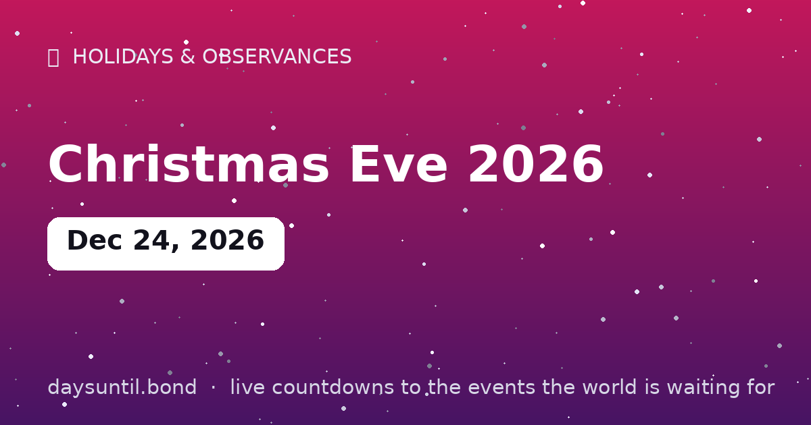

How Many Days Until Christmas Eve 2026?
Christmas Eve 2026 falls on Thursday, December 24, 2026.
As of October 24, 2026: 61 days to go — 8 weeks and 5 days, 44 weekdays (17 weekend days), about 1,464 hours.

Quick facts
| Date | Thursday, December 24, 2026 |
|---|---|
| Category | Holiday / observance |
About Christmas Eve 2026
Christmas Eve 2026 falls on Thursday, December 24, 2026. The night before Christmas: last-minute wrapping, candlelight services, and radar tracking of a certain sleigh. In many European and Latin cultures, this — not the 25th — is the main celebration.
The live counter above counts down the days, hours and minutes to Christmas Eve 2026 in your local time zone, and switches to a 'days since' counter once it arrives.
Is Christmas Eve 2026 on a weekend?
No — Christmas Eve 2026 falls on a Thursday. That is the awkward-but-workable version of the date: the day itself is a working day for most people, so travelling has to happen on Wednesday evening or Thursday morning, and the long build-up to Christmas gets compressed into a single evening.
The upside of a Thursday is the shape of the week that follows. Christmas Day lands on Friday, which gives most people a three-day break without anyone having to book annual leave for the Friday itself. In countries where the 26th is also a public holiday — the UK and much of the Commonwealth call it Boxing Day — the Friday and Monday combine into a four-day weekend with only one working day lost in the middle.
When does Christmas Eve actually begin?
This is less pedantic than it sounds, and the answer differs by tradition. In Christian liturgy, the feast of Christmas begins at sunset on 24 December — the evening of the 24th is the First Vespers of Christmas, which is why the Vigil Mass on Christmas Eve counts as Christmas rather than as the day before it. If you grew up with Midnight Mass, that structure is the reason it exists.
In secular terms, the answer is usually dinner. In northern and central Europe the celebration is the evening of the 24th: Germany's Bescherung (the giving of gifts) happens after dark on Christmas Eve, the Nordic julebord or julbord is eaten that day too, and in Poland the Wigilia supper begins when the first star appears. In the English-speaking world the 24th is a waiting room and the 25th is the event.
Which day is the main celebration where?
Roughly three patterns. The 24th is the main day across Germany, Austria, Scandinavia, Poland, much of central Europe and most of Latin America — in Spain the Nochebuena and in Portugal the Consoada are the big meals of the season. The 25th is the main day in the United States, the UK, Ireland, Canada, Australia and the Netherlands, with gifts opened on Christmas morning.
Then there is the third pattern: the 24th for the meal, early January for the gifts. In Spain and much of Latin America the Three Kings bring presents on 6 January, and in Italy the Befana fills stockings on the same date. Orthodox churches using the Julian calendar — in Russia, Serbia, Georgia and Ethiopia among others — keep Christmas on 7 January, which means their Christmas Eve is 6 January.
How many shopping days are left?
The countdown above gives you the exact figure, but the useful number is smaller than it looks. Once you subtract the days you will be working, travelling or asleep, a Thursday Christmas Eve means the last realistic evening for in-person shopping is Wednesday 23 December, and the last full weekend beforehand is 19–20 December.
For anything posted, the operative dates are the carriers' last collection days rather than Christmas itself, and those move every year and differ between standard, tracked and express services. The safe rule of thumb: anything standard should be sent in the first half of December, and anything left to the final week should go by a tracked or express service — or be avoided altogether.
What is open and closed on Christmas Eve?
Almost everywhere, the 24th is a half-day. In Germany and much of central Europe, shops close in the early afternoon and the rest of the day is spent at home. In the UK and Ireland, supermarkets shut early — often mid-afternoon — and there is no late-night trading. In the United States, grocery stores and pharmacies typically close early in the evening, while banks close at their normal Thursday times and do not reopen until the 26th.
Public transport winds down earlier than usual in most cities, and in some — London, for example — there is no service at all on Christmas Day itself, so Christmas Eve is the last chance to travel. If your plans depend on a train, bus or ferry, check the timetable for the 24th in advance rather than assuming a Thursday service.
Christmas Eve in numbers
Christmas Eve is one of the heaviest travel days of the year in the English-speaking world, and one of the quietest evenings. Retail in the days running up to it accounts for a large share of December's turnover in most Western markets, and the final weekend before Christmas is typically the busiest shopping period of the entire year in the US and UK.
It is also, by most accounts, one of the least busy times for restaurants and cinemas in countries where the celebration is centred on the home — which is precisely why it is a good night to book somewhere if you would rather not cook.
What people actually do on the 24th
The most common shape of the day is a short one: last-minute errands in the morning, travel around midday, food preparation in the afternoon, and an evening that is mostly about eating and waiting. Where gifts are opened on the 24th, the unwrapping is the centrepiece; where they are opened on the 25th, the 24th is often given over to church services, films, or the specific family ritual that marks the evening in your household.
The parts that reliably matter to children — the stocking, the one present opened early, the tracking of a fictional sleigh — sit almost entirely on the 24th regardless of which day your family does the main exchange.
Christmas Eve in other years
The date never moves, but the weekday does, and that changes how the holiday falls. Here is how the next three years line up.
A Friday Christmas Eve gives most people a three-day weekend with no leave needed; a Sunday one moves the public holidays to Monday and Tuesday in countries that observe them.
| Year | Christmas Eve | Weekday | Christmas Day |
|---|---|---|---|
| 2026 | 24 December | Thursday | Friday 25 December |
| 2027 | 24 December | Friday | Sunday 25 December |
| 2028 | 24 December | Sunday | Monday 25 December |
Your Christmas Eve 2026 countdown milestones
It is easier to plan against fixed points than against a number that moves. These are the dates on which the countdown to Christmas Eve 2026 passes each marker between now and the day itself — the last one falls on Wednesday 23 December, when there will be 1 day left.
| Milestone | Day | Date | Remaining |
|---|---|---|---|
| 50 days | Wednesday | 04 November 2026 | 50 days to go |
| 30 days | Tuesday | 24 November 2026 | 30 days to go |
| 14 days | Thursday | 10 December 2026 | 14 days to go |
| 7 days | Thursday | 17 December 2026 | 7 days to go |
| 3 days | Monday | 21 December 2026 | 3 days to go |
| 1 days | Wednesday | 23 December 2026 | 1 day to go |
How the remaining time breaks down
61 days is the headline, but it is rarely the number that helps. 44 of those are weekdays and 17 fall on a weekend, which is the split that matters if you are planning around work. It is 8 weeks and 5 days, or roughly 2.0 months, or about 1,464 hours.
| Unit | Until Christmas Eve 2026 |
|---|---|
| Days | 61 |
| Weeks | 8 weeks and 5 days |
| Months (approx) | 2.0 |
| Weekdays | 44 |
| Weekend days | 17 |
| Hours | 1,464 |
| Sleeps | 61 |
Working days are Monday to Friday and do not subtract public holidays, which vary by country and employer — the full month-by-month split is on our weekday page for Christmas Eve 2026.